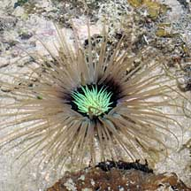
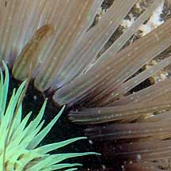
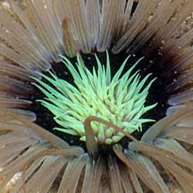
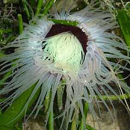

|
|
| cerianthid text index | photo index |
| Phylum Cnidaria > Class Anthozoa > Subclass Zoantharia/Hexacorallia > Order Ceriantharia |
| Black-mouth
cerianthid awaiting identification* updated Mar 2020 Where seen? This rather large cerianthid with a dark centre and neon inner tentacles is sometimes seen on some of our shores. Among coral rubble, near seagrasses. Features: 12-15cm in diameter. The very long tapering outer tentacles are transparent to pale white or beige. In some, the pale outer tentacles have fine darker stripes. The 'mouth' is very dark brown to black while the short inner tentacles are usually a pale neon green. Body column black. |
|
 Pulau Semakau, Apr 08 |
 Fine stripes on outer tentacles. |
 |
*Species are difficult to positively identify without close examination.
On this website, the animals are grouped by external features for convenience of display.
| Black-mouth cerianthids on Singapore shores |
On wildsingapore
flickr
|
| Other sightings on Singapore shores |
 Cyrene Reef, Jul 10 Photo shared by Loh Kok Sheng on his flickr. |